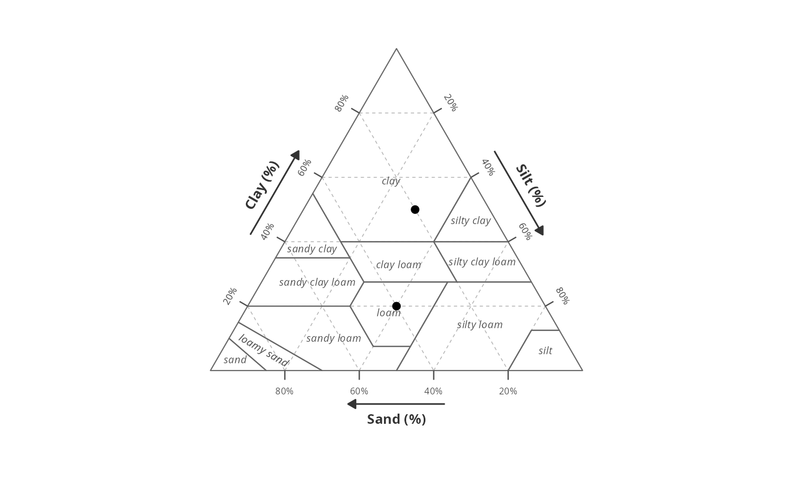

Add iso-contour lines to a texture triangle plot
Source:R/texture_surface.R
geom_texture_contour.RdInterpolates a numeric variable from scattered ternary sample points onto a
regular Cartesian grid (using IDW) and draws contour lines at the specified
values. Add to a plot produced by gg_texture_triangle() with +.
Usage
geom_texture_contour(
data,
sand,
silt,
clay,
z,
breaks = NULL,
resolution = 150L,
power = 2,
...
)Arguments
- data
A data frame containing sample points.
- sand, silt, clay
Bare column names for the ternary coordinates (0–100).
- z
Bare column name for the numeric value to interpolate.
- breaks
Numeric vector of z values at which to draw contour lines. Passed to
ggplot2::geom_contour(). IfNULL(default), ggplot2 chooses breaks automatically.- resolution
Integer. Interpolation grid width (default
150L).- power
Positive numeric. IDW exponent (default
2).- ...
Additional arguments passed to
ggplot2::geom_contour()(e.g.linewidth,colour,linetype).
Details
Contour lines are rendered on top of all triangle layers, making them
suitable for highlighting analytical thresholds (e.g. a significance
boundary at p = 0.05).
Examples
set.seed(7)
surf_df <- tibble::tibble(
sand = runif(80, 5, 90),
clay = runif(80, 5, 60),
silt = 100 - sand - clay
) |>
dplyr::filter(silt >= 0) |>
dplyr::mutate(p_val = pnorm(scale(clay)[, 1]))
pts <- tibble::tibble(sand = c(40, 20), silt = c(40, 30), clay = c(20, 50))
gg_texture_triangle(pts, sand, silt, clay) +
geom_texture_contour(surf_df, sand, silt, clay, z = p_val,
breaks = 0.05, linewidth = 1.4, colour = "red")
